The Redesign of Caltrain Mobile App
Role: UX UI Design, User Research, User Testing | Duration: 3 Months
THE PROBLEM
As a frequent Caltrain user, I have noticed that the mobile app from Caltrain doesn't meet their customers' needs. And the user experience is poorly designed. Through primary, secondary, and tertiary research, it was suggested that most Caltrain users are disappointed at the current app and turning to services provided by 3rd parties.
To solve the problems, I decided to start with a heuristic evaluation of the current app and primary research with the target audience. Having the advantage of taking the Caltrain every week, I was able to observe and talk to many Caltrain riders to understand their pain points, what they need and want. With the insights I focused on three use cases: checking schedules from work to home, adding clipper cash value, and paying for station parking. I started prototyping and testing, after 4 rounds of iterations I reached the final design.
RESEARCH
In my research I read through the reviews in the app store, and putting myself in the shoes of the users to experience it myself. Through interviewing actual users, I got more insights that I have never experienced myself. With secondary research, I understood more about the target audience which helped me make design decisions.
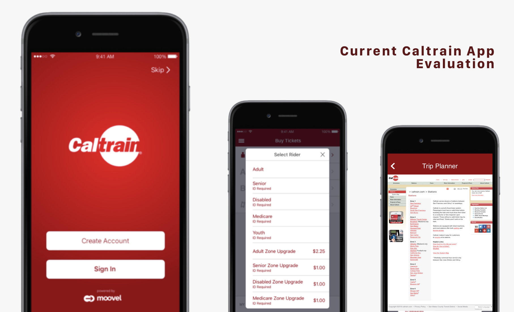HEURISTIC EVALUATION
To identify the problems, firstly I conducted a heuristic evaluation to measure the efficacy of the design in order to redesign and improve it.
01
FUNCTIONALITY
As an official app from Caltrain, users expect certain basic functions and information to help with their travels. However, the app only designed the ticket purchasing function which led to the very low rating of the app, complains in the reviews, and the losing of users.
02
CONCEPTUAL MODEL
Current Caltrain app’s design doesn’t bridge the gap between designer’s conceptual model and user’s mental model. The task flow of the app doesn’t show the understanding of user journey of the target audience. After purchasing a ticket, what’s next? Do users want to know where the stations are? Which trains they can take? When to board and get off the trains?
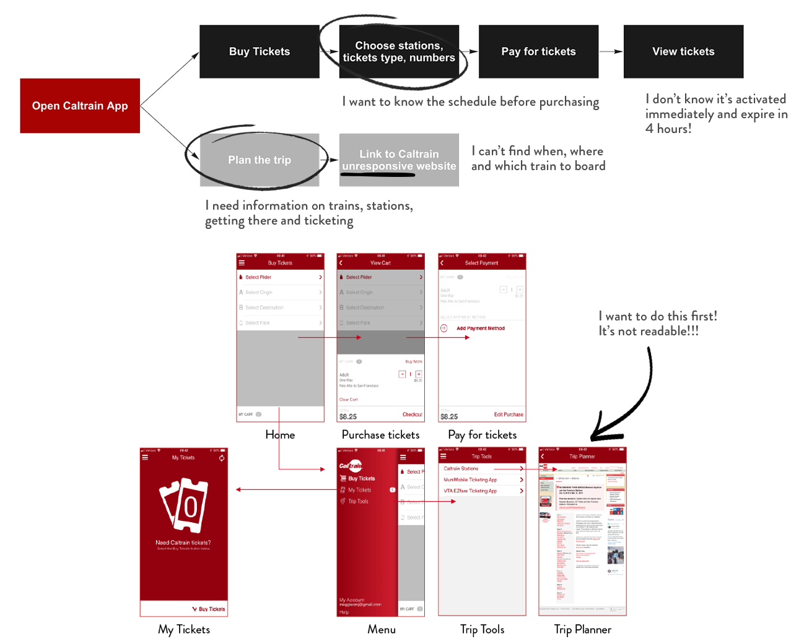03
RESPONSIVENESS
It’s shocking to see how Caltrain linked their unresponsive website in the trip planner section. Even though users can zoom in the webpage, it’s extremely difficult to check the schedules in this timetable and plan the trip. A lot of useful information from Caltrain are designed for print and desktop websites. Designers can’t just use them directly without tailoring to mobile devices. In order for users to access the information on the go, contents need to be designed friendly on mobile devices.
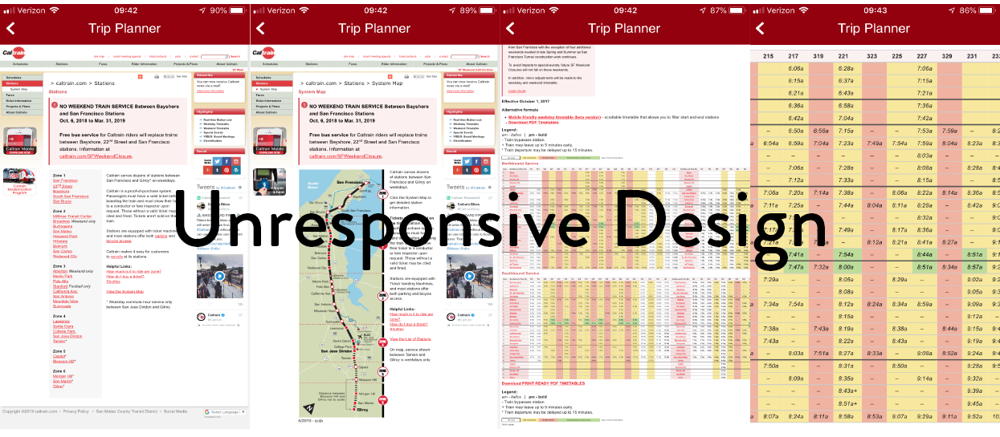COMPETITORS & INSPIRATIONS
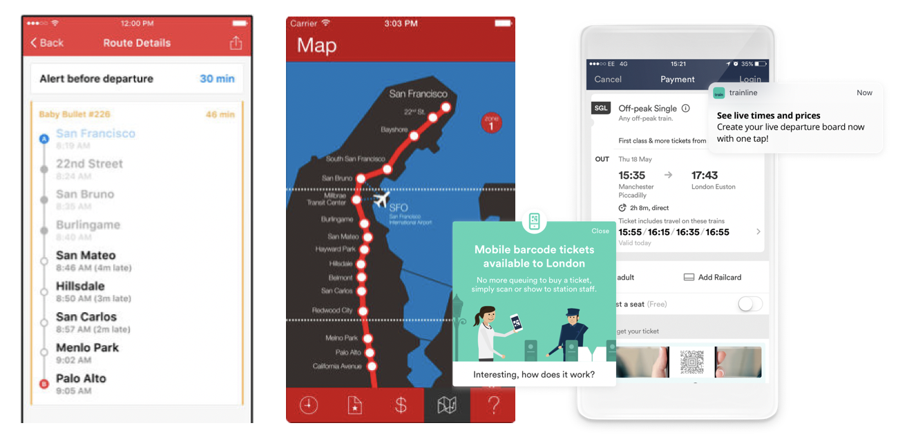Caltrain - Real-time Schedule is an app developed by 3rd party with train schedule from Caltrain to give commuter real time train schedules.
CaltrainMe is another app that gives users real-time schedules and support offline schedules too.
Trainline is an inspiration for Caltrain app. You can plan your journey and buy and hold tickets for travel. It’s a leading train travel app.
AUDIENCE

As I started my research, firstly I tried to identify Caltrain's target audience. As a Caltrain user myself, I have observed people taking Caltrain everyday. I had a general perception of the users.
From Alexa.com I gethered a set of useful demographics data on users who visit Caltrain.com. As Caltrian Mobile has a fairly small user pool, there are not much data generated by 3rd parties. However, Caltrain Mobile users are those who take Caltrain and check Caltrain website.
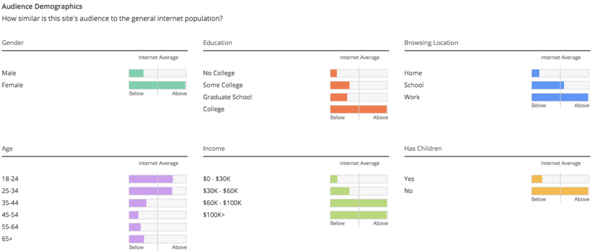Apart from 3rd party resources, Caltrain does research and generate reports on thier customers as well. I was able to find a report in 2017 on their customers. Then I created this graph of their customers' demographics.
Most of the Caltrain riders use Clipper card (52%) and Go passes(21%) when they travel on Caltrain. Among whom, 36% of them travel with monthly passes and 16% of them use Clipper Cash. That left only around a quarter Caltrain riders who need to purchase tickets. Since the only functions Caltrain Mobile app were designed with are purchsing and proving tickets. This explains why so many bad reviews on Caltrain Mobile app are about its functions and not meeting customers' need.
Audience Interview
To better empathize with users, I conducted a few interviews at train stations and over the phone with caltrain users. I talked to frequent Caltrain riders who take it on a daily basis and also riders who only ride the train occasionally. Then I used affinity diagramming to process the data.
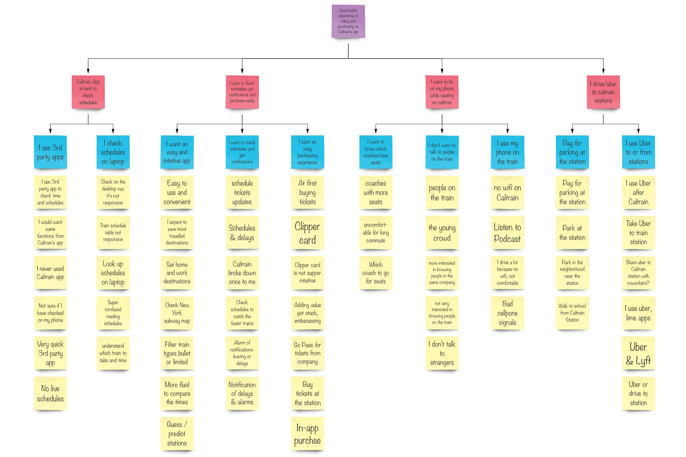For the interviews I asked questions regarding three general categories including their background, experience with Caltrain, and their feedbacks on the app.
To Empathize with the users, I also mapped the user journey from planning the trip to getting the destination after the train ride. Then I started to identify the pain points in their journey which was not found in the evaluation of the app.
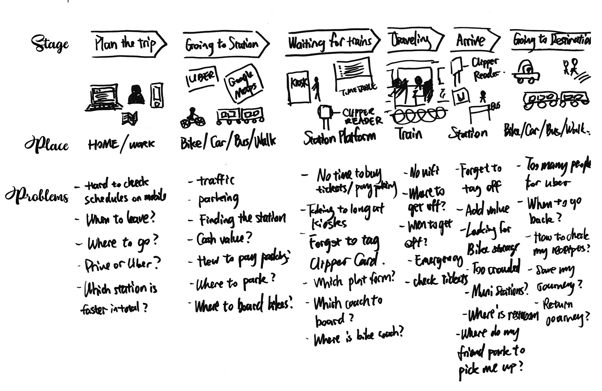1
Checking Schedules
In the heuristic evaluation I found it's hardly possible to plan trips in the app with unresponsive design. Checking live schedule is a big pain point for a lot of riders.
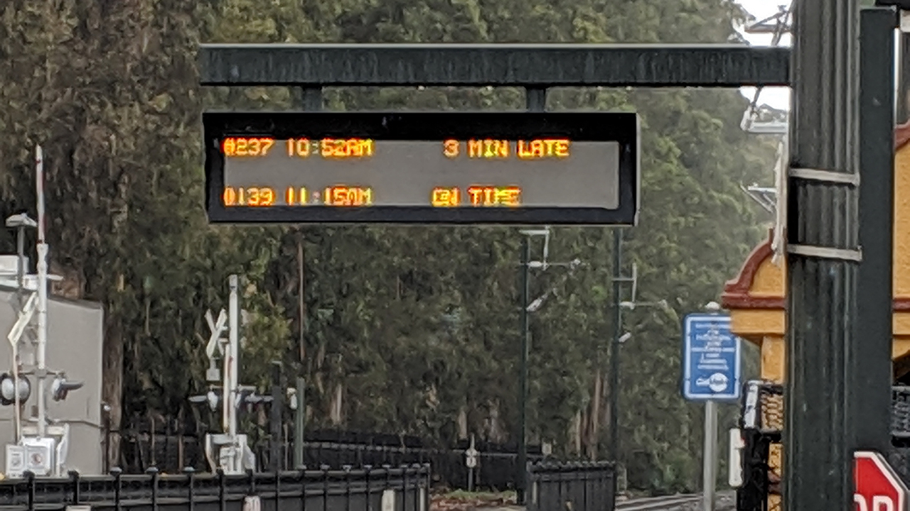2
Clipper Card
From the research I found out most Caltrain riders use Clipper Card as their ticket of choice. However, they can hardly check the balance on the go. It happened to a lot of users I interviewed, that they forgot to tag their cards at the stations sometimes. Adding balance to the card on the machine is not intuitive and takes a very long time.
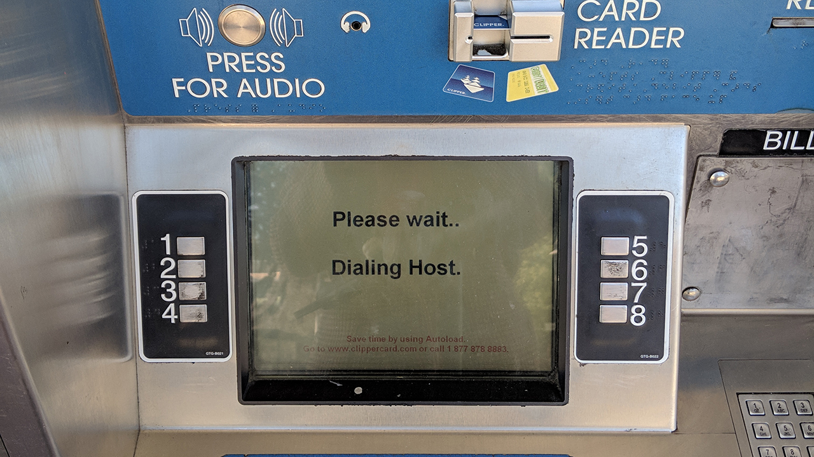3
Station Parking
I never drove to caltrain stations, but quite a few users have expressed the pain with station parking. The designer's conceptual model is to have users park their car first, then remember the number to pay at the kiosks inside the station. Without seeing the guide, users wouldn't know they have to remember the stall number. It's also hard to know where are available spaces to park.
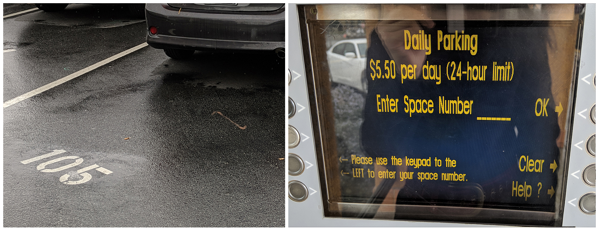DESIGN
USER FLOW
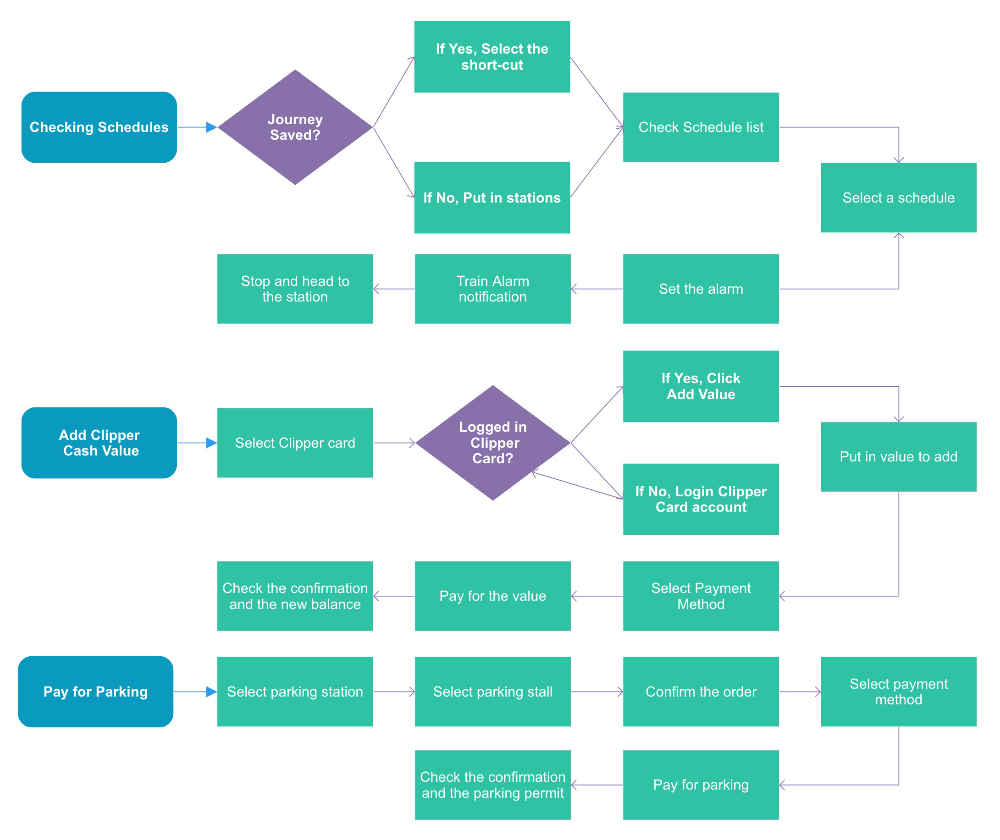Mapping the user flow is the first step to design the tasks. After testing and validating the steps in the workflow, I moved on to prototype in wireframes.
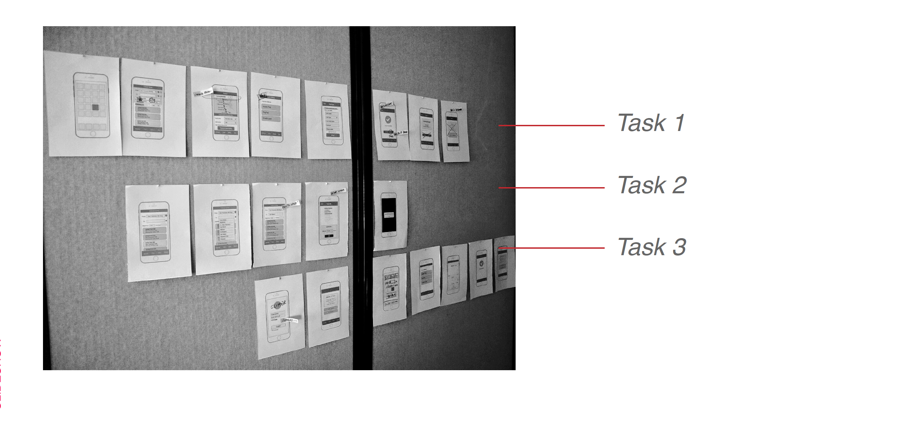Using the personas really helped me to design for the users. For the three tasks I created three personas with backgrounds from my user research to walk through the tasks.
User Case 01: Checking Schedules
Steve Johnson
Age: 28
Occupation: Data Scientist
Commute: San Mateo - San Francisco
Ticket Type: Monthly Pass
Story:
"Working for a tech company, I have very flexible work schedules. I often need to check Caltrain schedules before leaving work and home, so I can plan my travels."
Checking Schedules
Checking train schedules from work to home.
Set an alarm to remind himself 20 minutes before the departure time.
Final Design
User Case 02: Add Clipper Cash Value
Ben Jackson
Age: 33
Occupation: Product Manager
Commute: Mountain View - San Francisco
Ticket Type: Clipper Cash
Story:
"As a product manager who travels to another office in San Francisco once or twice a week, he needs to be able to check and add value to his Clipper Card."
Add Clipper Cash Value
Check Clipper Card cash balance.
Add $40 to Clipper Cash with Apple Pay.
Final Design
User Case 03: Paying for Station Parking
Hellen Fan
Age: 25
Occupation: Marketing Specialist
Commute: Palo Alto - San Francisco
Ticket Type: Go Passes
Story:
"As a Caltrain rider who sometimes drives to the station, I need to pay for parking on the go, so I don’t need to waste time on the kiosk before boarding the train."
Paying for Station Parking
Park at Palo Alto Station South Car Park stall 364.
Pay for the daily parking of today with credit card.
Final Design
Key Features
1
Setting Stations
From research I found that most users are commuters who travel regularly between two stations. Users can buy tickets and check schedules for the same input information.
Being able to toggle stations for return journey is very userful according to users.
2
Switching Positions
After putting in the travel information, the primary content that the users are looking for is the results. Moving the search bar to the bottom allows users to focus on the train schedules.
By sliding or tapping on the time, it avoids opening another pop-up or drop-down window. More users prefer this way over the others through testing.

3
Train Details
In the train detail card they can see all the information they want to know about the train. Also, for users who need to purchase tickets, they can do it without going back to the homepage. Setting the alarm is a useful function for users to get reminded and leave on time.
To check more information about the train and the journey, simply tap and expande the card. Users prefer not to open another page in the testing.
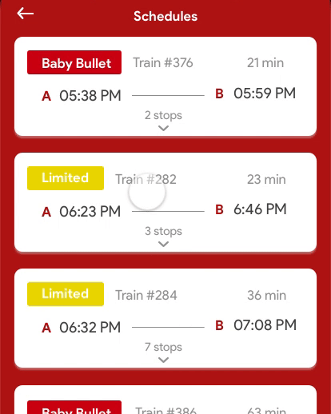4
Clipper Card Page
Users have to login their account to view the information. With low balance indacation, users can get reminded to add value before travelling. They can also know when the monthly pass expires and buy another one.
5
Parking Page
To park at the station, it is helpful to know where the parking lot is and which stalls they are able to park. Select the stall and pay for the parking without going to the kiosk on the platform is much more convenient.
TESTING
Validating the designs through User Testing is very important to make the right improvements. From low-fidelity wireframes to high-fidelity designs, every change has been made from feedbacks from the testing with users.
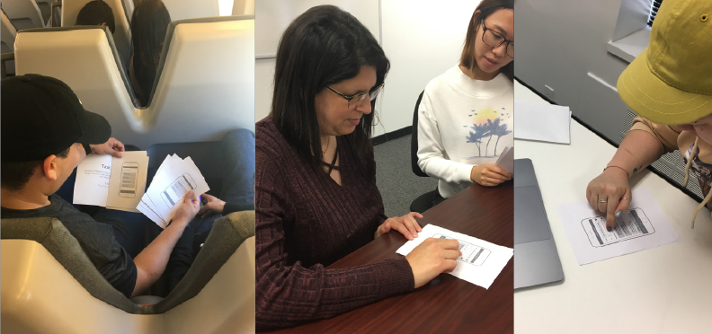ITERATIONS
Through repeat testing, the prototype has changed a lot to smooth the user flow and improve the experience. Here are some examples of iterations I made.
I tried a lot of different ways to show the information on the schedule page. It's very hard to display all the functions with information together. But with testing, I was able to reach the final version which is very easy to check the schedules and set time and stations. Even though the search bar is usually placed at the top, users prefer to have it at the bottom and have the schedules at the top.
I have struggled a lot whether there should be a home screen with all the functions to link to or have schedule page as the home screen with navigation to different pages. After testing, users prefer to be able to link to different functions from the homepage. After a lot of iterations it came to the final wireframe with three main functions displayed as cards.
Parking page also went through a lot of changes. At first the prototype was designed to complete the parking task. When I started testing, I realized there are much more to take into consideration. Where do users park their cars? How do they select stalls? What is the steps they take in real life?
REFLECTIONS
I had a lot of passion towards this project as I really felt there was a need to improve the user experience of the app and provide the services that will make Caltrain riders' life easier.
There are a lot of ideas that I don't have time to prototype and give it a try. Some ideas will require a lot more efforts from Caltrain and users, for example, suggesting which train is more crowded, where in the train people should board at certain station, can disabled users require a seat prior to their travel, etc. There are so much we can do to make the Caltrain experience better. If you are also interested and would like to talk to me, please feel free to contact me.